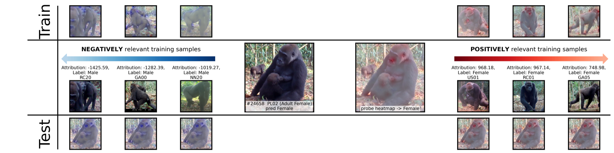
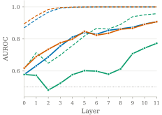
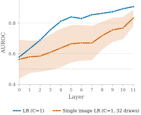
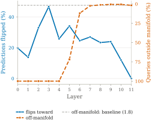
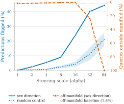
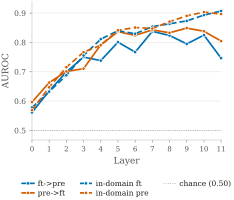
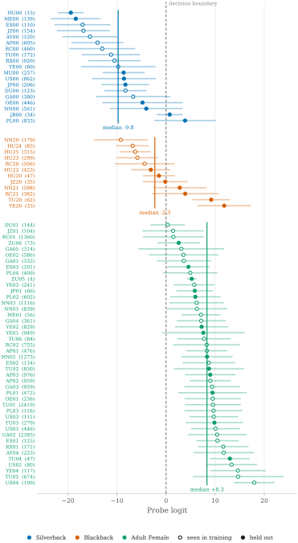
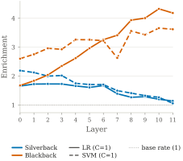

Problem
Conservation increasingly relies on motion-triggered camera traps, which collect far more wildlife imagery than experts can manually review. Animal re-identification (Re-ID) turns this data deluge into usable information about individuals and populations — but as Re-ID moves to deep, black-box Vision Transformers, understanding why a model identifies a given animal matters just as much as how accurately it does so, especially for long-term, real-world conservation monitoring.
Modern Re-ID models are trained with metric-learning objectives such as triplet loss, which only ever see identity labels — never sex, age, or any other biological attribute, and require no classification head at all. This raises a basic question: can a model trained solely to distinguish individual animals nevertheless organize its internal representation along biologically meaningful axes such as sex and age? Or does it rely on cues that a domain expert would not recognize as meaningful evidence?
We study this question using a DINOv3 Vision Transformer fine-tuned with a triplet-margin loss to re-identify individual Western lowland gorillas. Because the model receives no concept supervision whatsoever, any biological structure we uncover in its representation must have emerged purely as a side effect of learning to tell individuals apart — making it a clean test case for whether interpretability methods can recover, and causally verify, biologically meaningful structure inside a metric-learning model.
Findings
Using linear concept probing, activation steering, and data attribution, we find that biologically meaningful concepts emerge as structured, causal, and highly redundant components of the Re-ID representation — and that attribution exposes both useful diagnostics and a potentially misleading shortcut.
1. Linear concepts emerge under metric learning
A ViT trained solely to re-identify individual gorillas encodes sex and age as approximately linear directions in its residual stream, reaching up to 0.91 AUROC at the image level (0.97 at the identity level) on individuals never seen during probing. Separability grows in later layers, and — despite being fit on just 46 images, one per training individual — the concept remains recoverable when the probe sees only a single image per individual, ruling out simple memorization.


2. The sex direction is causally used by the model
Linear decodability only shows that sex information is present. To test whether it is actually used, we steer a query's activations toward the opposite-sex direction at an intermediate layer. At intervention strength α=16, this flips 24% of nearest-neighbor identity predictions toward the opposite sex — versus <4% for random directions — while under 1% of steered queries leave the model's normal embedding manifold. Stronger interventions increase the apparent effect but also collapse the representation, a failure mode we detect with an explicit degradation diagnostic.


3. Fine-tuning reshapes concepts — it doesn't create them
Sex is already strongly linearly decodable in the off-the-shelf, non-fine-tuned DINOv3 backbone, with AUROCs comparable to the Re-ID-fine-tuned model. Probes transfer well between pretrained and fine-tuned activations through most of the network, but directions increasingly diverge near the output — cosine similarity drops from ∼0.95 in early layers to ∼0.25 in the final layer. Re-ID fine-tuning therefore relocates an existing biological representation rather than inventing one from scratch.

4. A graded biological axis, redundantly encoded
Rather than a binary male–female split, per-individual probe scores trace a continuous axis: silverbacks and adult females anchor opposite extremes, while visually ambiguous blackbacks cluster in between — mirroring the real difficulty primatologists face when sexing subadult gorillas. Data attribution shows blackbacks are 4× over-represented among the training images that constitute this direction (support vectors / k90), yet identity-level leave-one-out retraining shows no single individual is essential — removing any one changes held-out AUROC by at most 0.016. The concept is disproportionately shaped by difficult individuals, but redundantly encoded across the population.


5. Attribution surfaces a plausible shortcut
Propagating attribution to pixel-level relevance (DualXDA with AttnLRP) shows the sex probe mostly relies on facial and other sex-associated anatomical regions, consistent with genuine Re-ID cues. But for images of females nursing an infant, relevance also concentrates on the infant itself — a biologically plausible correlate of sex that could nonetheless become a spurious shortcut (see the teaser figure above).